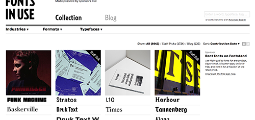
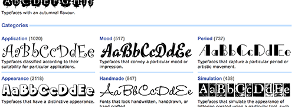

Website Comparison
A Successful Website
I like using this site because it is arranged nicely even with the amount of graphics used to support the content.Fonts In Use is a site that provides information about typefaces by using graphics. Welcoming users with different purposes, the site's niche is however presented. I use this site when looking for inspiration on typefaces usages, as well as graphic inspiration. Using the site is extremely smooth that I usually get lost in it. Because going back and forth in the site is extremely smooth as well. This site serves people who prefer looking at artworks at the same time finding information about the typefaces used. Therefore, displaying information is the one of the main purpose of the site. Both showing and arranging are done well within the site which leads to a successful site in general.
A Less Successful Website
A similar site that I use yet doesn't really enjoy using it is fontscape.com. Because of poor using of space and very poor visual support. Often do I end up in the very wrong place of the site because of the very brief discription as their way of catagory. Showing only one example for each catagory, the site needs a more space maybe to solve that problem. Which to me, seems not that hard to do, because a website has ifinite space because of the scrolling system. Nothing on the site is appealing. It's aesthetic is very old fashioned. The appearence of the site seems like it stayed in 1996. Which really isn't something that we as viewers can change. However, to me, it definitely doesn't accompany the content.
